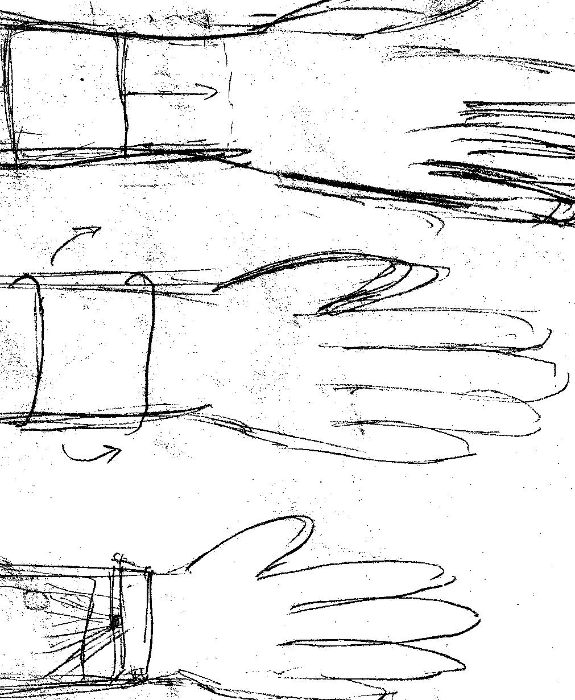
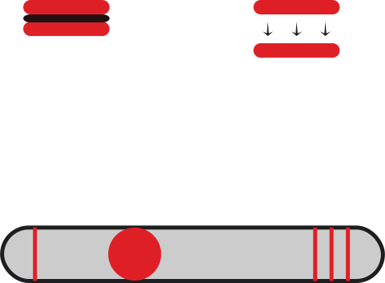
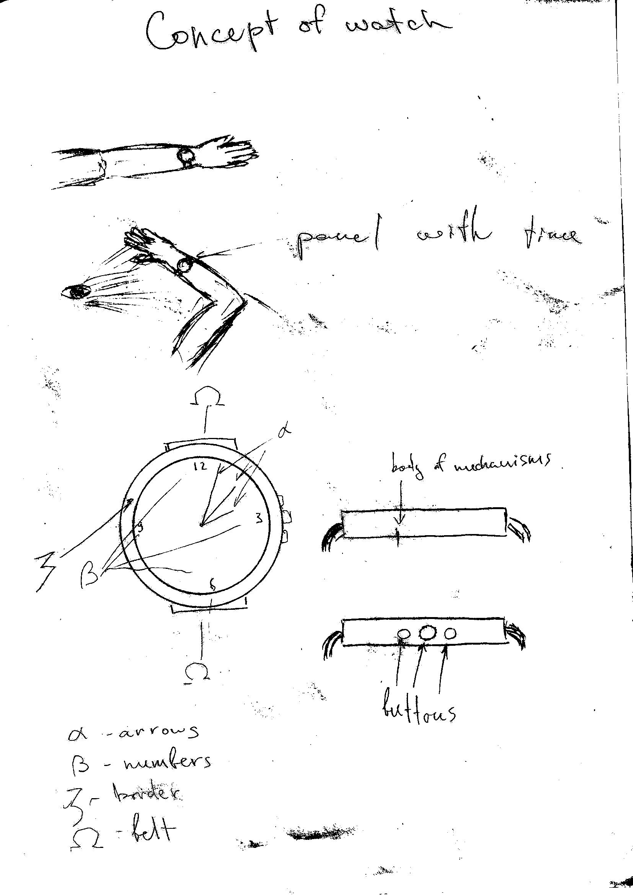
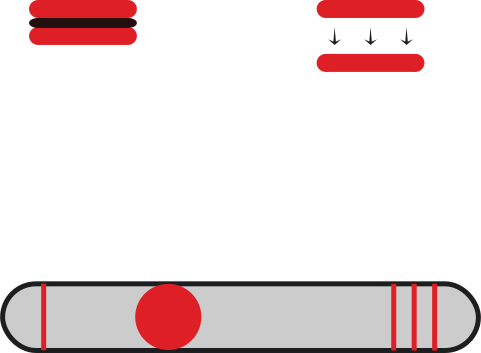

Date: 1 June 2019

Watches

Date: 1 June 2019
Date: 1 June 2019
Watches
Date: 1 June 2019
Watches in my vision it is free-dress accessory that not wear only on hand
I want to upgrade digital in phones and watches communications. I think now we begin lose difference between watch and phone. There are accessory and device/gadget. I think it would not separate in nearest future.
My target for this is make some extraordinary design and make it free-comfortable in touch and using. I am trying to find way to create 3D image from watches like hologram and after long play with colors and lights. I found only one way to create interactive reality. It is creating small retractable cylinder that might open and close, it needs to be transparent.
Watches is not a big interest for me at all, I really like this type, but I do not think that it is important in nearest future. I may train and practice on magnet devices and interactive holograms.
The cost of these concept may be 20 000 - 370 000 $
Work will be from 15 to 76 weeks
At the result of calculations 19 400 – 543 900 $
Time – 14 – 112 weeks
I think that it will be only part of big project.